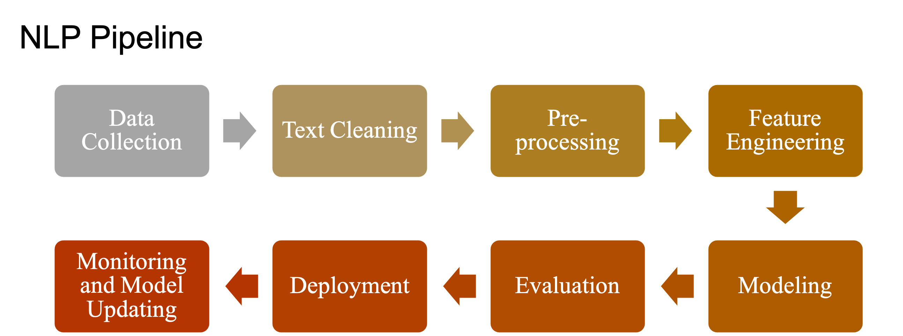

<!DOCTYPE html>

<html>
  <head>
    <meta charset="utf-8" />
    <meta name="viewport" content="width=device-width, initial-scale=1.0" />
    <title>NLP Pipeline &#8212; Python Notes for Linguistics</title>
    <link rel="stylesheet" href="https://cdnjs.cloudflare.com/ajax/libs/font-awesome/5.11.2/css/all.min.css" integrity="sha384-KA6wR/X5RY4zFAHpv/CnoG2UW1uogYfdnP67Uv7eULvTveboZJg0qUpmJZb5VqzN" crossorigin="anonymous">
    <link href="../_static/css/index.css" rel="stylesheet">
    <link rel="stylesheet" href="../_static/sphinx-book-theme.css" type="text/css" />
    <link rel="stylesheet" href="../_static/pygments.css" type="text/css" />
    <link rel="stylesheet" type="text/css" href="../_static/togglebutton.css" />
    <link rel="stylesheet" type="text/css" href="../_static/copybutton.css" />
    <link rel="stylesheet" type="text/css" href="../_static/mystnb.css" />
    <link rel="stylesheet" type="text/css" href="../_static/sphinx-thebe.css" />
    <link rel="stylesheet" type="text/css" href="../_static/mycss.css" />
    <link rel="stylesheet" type="text/css" href="../_static/sphinx-dropdown.css" />
    <script id="documentation_options" data-url_root="../" src="../_static/documentation_options.js"></script>
    <script src="../_static/jquery.js"></script>
    <script src="../_static/underscore.js"></script>
    <script src="../_static/doctools.js"></script>
    <script src="../_static/language_data.js"></script>
    <script src="../_static/togglebutton.js"></script>
    <script src="../_static/clipboard.min.js"></script>
    <script src="../_static/copybutton.js"></script>
    <script src="../_static/sphinx-book-theme.js"></script>
    <script >var togglebuttonSelector = '.toggle, .admonition.dropdown, .tag_hide_input div.cell_input, .tag_hide-input div.cell_input, .tag_hide_output div.cell_output, .tag_hide-output div.cell_output, .tag_hide_cell.cell, .tag_hide-cell.cell';</script>
    <script async="async" src="https://cdnjs.cloudflare.com/ajax/libs/mathjax/2.7.7/latest.js?config=TeX-AMS-MML_HTMLorMML"></script>
    <script type="text/x-mathjax-config">MathJax.Hub.Config({"tex2jax": {"inlineMath": [["\\(", "\\)"]], "displayMath": [["\\[", "\\]"]], "processRefs": false, "processEnvironments": false}})</script>
    <script async="async" src="https://unpkg.com/thebelab@latest/lib/index.js"></script>
    <script >
        const thebe_selector = ".thebe"
        const thebe_selector_input = "pre"
        const thebe_selector_output = ".output"
    </script>
    <script async="async" src="../_static/sphinx-thebe.js"></script>
    <link rel="index" title="Index" href="../genindex.html" />
    <link rel="search" title="Search" href="../search.html" />
    <link rel="next" title="Natural Language Processing (spaCy)" href="nlp-spacy.html" />
    <link rel="prev" title="Natural Language Processing: A Primer" href="nlp-primer.html" />

    <meta name="viewport" content="width=device-width, initial-scale=1">
    <meta name="docsearch:language" content="en">


  </head>
  <body data-spy="scroll" data-target="#bd-toc-nav" data-offset="80">
    

    <div class="container-xl">
      <div class="row">
          
<div class="col-12 col-md-3 bd-sidebar site-navigation show" id="site-navigation">
    
        <div class="navbar-brand-box">
<a class="navbar-brand text-wrap" href="../index.html">
  
  
  
  
  <h1 class="site-logo" id="site-title">Python Notes for Linguistics</h1>
  
</a>
</div>

<form class="bd-search d-flex align-items-center" action="../search.html" method="get">
  <i class="icon fas fa-search"></i>
  <input type="search" class="form-control" name="q" id="search-input" placeholder="Search this book..." aria-label="Search this book..." autocomplete="off" >
</form>

<nav class="bd-links" id="bd-docs-nav" aria-label="Main navigation">
  <ul class="current nav sidenav_l1">
 <li class="toctree-l1">
  <a class="reference internal" href="../python-basics/python-basics.html">
   Python Basics
  </a>
 </li>
 <li class="toctree-l1">
  <a class="reference internal" href="../corpus/corpus-processing.html">
   Corpus Linguistics with Python
  </a>
 </li>
 <li class="toctree-l1">
  <a class="reference internal" href="../statistical-analyses/statistical-analyses.html">
   Statistical Analyses
  </a>
 </li>
 <li class="toctree-l1 current active">
  <a class="reference internal" href="nlp.html">
   Natural Language Processing with Python
  </a>
  <ul class="current">
   <li class="toctree-l2 current active">
    <a class="reference internal" href="nlp-primer.html">
     Natural Language Processing: A Primer
    </a>
    <ul class="current">
     <li class="toctree-l3 current active">
      <a class="current reference internal" href="#">
       NLP Pipeline
      </a>
     </li>
     <li class="toctree-l3">
      <a class="reference internal" href="nlp-spacy.html">
       Natural Language Processing (spaCy)
      </a>
     </li>
     <li class="toctree-l3">
      <a class="reference internal" href="nlp-spacy-zh.html">
       Chinese Natural Language Processing (spaCy)
      </a>
     </li>
     <li class="toctree-l3">
      <a class="reference internal" href="nlp-ckipnlp.html">
       Natural Language Processing (ckipnlp)
      </a>
     </li>
    </ul>
   </li>
   <li class="toctree-l2">
    <a class="reference internal" href="text-normalization-intro.html">
     Text Normalization
    </a>
    <ul>
     <li class="toctree-l3">
      <a class="reference internal" href="text-normalization-eng.html">
       Text Normalization (English)
      </a>
     </li>
     <li class="toctree-l3">
      <a class="reference internal" href="text-normalization-chinese.html">
       Text Normalization (Chinese)
      </a>
     </li>
    </ul>
   </li>
   <li class="toctree-l2">
    <a class="reference internal" href="sklearn.html">
     Machine Learning with Sci-Kit Learn
    </a>
    <ul>
     <li class="toctree-l3">
      <a class="reference internal" href="naive-bayes.html">
       Naive Bayes
      </a>
     </li>
     <li class="toctree-l3">
      <a class="reference internal" href="sentiment-analysis-ml.html">
       Sentiment Analysis with Traditional Machine Learning
      </a>
     </li>
    </ul>
   </li>
   <li class="toctree-l2">
    <a class="reference internal" href="neural-network-from-scratch.html">
     Neural Network From Scratch
    </a>
   </li>
   <li class="toctree-l2">
    <a class="reference internal" href="language-model.html">
     Language Model
    </a>
    <ul>
     <li class="toctree-l3">
      <a class="reference internal" href="neural-language-model-primer.html">
       Neural Language Model: A Start
      </a>
     </li>
     <li class="toctree-l3">
      <a class="reference internal" href="neural-language-model-zh.html">
       Neural Language Model of Chinese
      </a>
     </li>
     <li class="toctree-l3">
      <a class="reference internal" href="text-gen-lstm-v1.html">
       Text Generation
      </a>
     </li>
     <li class="toctree-l3">
      <a class="reference internal" href="gpt2.html">
       Transformer-based Language Model - GPT2
      </a>
     </li>
    </ul>
   </li>
   <li class="toctree-l2">
    <a class="reference internal" href="word-embeddings.html">
     Word Embeddings
    </a>
    <ul>
     <li class="toctree-l3">
      <a class="reference internal" href="word2vec-chinese.html">
       Word Embeddings with Chinese Texts
      </a>
     </li>
     <li class="toctree-l3">
      <a class="reference internal" href="word2vec.html">
       Word2Vec
      </a>
     </li>
     <li class="toctree-l3">
      <a class="reference internal" href="doc2vec.html">
       Dov2Vec
      </a>
     </li>
     <li class="toctree-l3">
      <a class="reference internal" href="word-embeddings-autoencoder.html">
       Generate Text Embeddings Using AutoEncoder
      </a>
     </li>
     <li class="toctree-l3">
      <a class="reference internal" href="transfer-learning-sent-encoding.html">
       Universal Sentence Embeddings
      </a>
     </li>
    </ul>
   </li>
   <li class="toctree-l2">
    <a class="reference internal" href="sentiment-analysis-dl.html">
     Sentiment Analysis with Deep Learning
    </a>
   </li>
   <li class="toctree-l2">
    <a class="reference internal" href="sentiment-analysis-lstm-v1.html">
     Sentiment Analysis with LSTM
    </a>
   </li>
   <li class="toctree-l2">
    <a class="reference internal" href="seq-to-seq-types.html">
     Intutions for Types of Sequence-to-Sequence Models
    </a>
    <ul>
     <li class="toctree-l3">
      <a class="reference internal" href="seq-to-seq-types-date.html">
       Types of Seqeunce Model
      </a>
     </li>
     <li class="toctree-l3">
      <a class="reference internal" href="seq-to-seq-m21-sentiment-attention.html">
       Sequence Model (many-to-one) with Attention
      </a>
     </li>
     <li class="toctree-l3">
      <a class="reference internal" href="seq-to-seq-attention-addition.html">
       Seqeunce Model with Attention for Addition Learning
      </a>
     </li>
    </ul>
   </li>
   <li class="toctree-l2">
    <a class="reference internal" href="seq-to-seq-machine-translation.html">
     Machine Translation (Sequence-to-Sequence)
    </a>
    <ul>
     <li class="toctree-l3">
      <a class="reference internal" href="seq-to-seq-machine-translation-attention.html">
       Machine Translation with Attention (Thushan)
      </a>
     </li>
    </ul>
   </li>
   <li class="toctree-l2">
    <a class="reference internal" href="hyperparameter-tuning.html">
     Hyper-Parameter Tuning
    </a>
   </li>
   <li class="toctree-l2">
    <a class="reference internal" href="sentiment-analysis-using-bert-chinese.html">
     Sentiment Analysis Using BERT
    </a>
   </li>
   <li class="toctree-l2">
    <a class="reference internal" href="ktrain-tutorial-explaining-predictions.html">
     Explainable AI
    </a>
   </li>
  </ul>
 </li>
 <li class="toctree-l1">
  <a class="reference internal" href="../appendix/todo.html">
   To-do List
  </a>
 </li>
</ul>

</nav>

 <!-- To handle the deprecated key -->

<div class="navbar_extra_footer">
  <div style="text-align:left">
<i class="fas fa-home fa-2x" style="color:Maroon;margin-right:5px"></i><a href="https://alvinchen.myftp.org/" target='_blank'>Alvin Chen's Homepage</a>
</div>

</div>

</div>


          


          
<main class="col py-md-3 pl-md-4 bd-content overflow-auto" role="main">
    
    <div class="row topbar fixed-top container-xl">
    <div class="col-12 col-md-3 bd-topbar-whitespace site-navigation show">
    </div>
    <div class="col pl-2 topbar-main">
        
        <button id="navbar-toggler" class="navbar-toggler ml-0" type="button" data-toggle="collapse"
            data-toggle="tooltip" data-placement="bottom" data-target=".site-navigation" aria-controls="navbar-menu"
            aria-expanded="true" aria-label="Toggle navigation" aria-controls="site-navigation"
            title="Toggle navigation" data-toggle="tooltip" data-placement="left">
            <i class="fas fa-bars"></i>
            <i class="fas fa-arrow-left"></i>
            <i class="fas fa-arrow-up"></i>
        </button>
        
        <div class="dropdown-buttons-trigger">
    <button id="dropdown-buttons-trigger" class="btn btn-secondary topbarbtn" aria-label="Download this page"><i
            class="fas fa-download"></i></button>

    
    <div class="dropdown-buttons">
        <!-- ipynb file if we had a myst markdown file -->
        
        <!-- Download raw file -->
        <a class="dropdown-buttons" href="../_sources/nlp/nlp-pipeline.ipynb"><button type="button"
                class="btn btn-secondary topbarbtn" title="Download source file" data-toggle="tooltip"
                data-placement="left">.ipynb</button></a>
        <!-- Download PDF via print -->
        <button type="button" id="download-print" class="btn btn-secondary topbarbtn" title="Print to PDF"
            onClick="window.print()" data-toggle="tooltip" data-placement="left">.pdf</button>
    </div>
    
</div>
        <!-- Source interaction buttons -->


        <!-- Full screen (wrap in <a> to have style consistency -->
        <a class="full-screen-button"><button type="button" class="btn btn-secondary topbarbtn" data-toggle="tooltip"
                data-placement="bottom" onclick="toggleFullScreen()" title="Fullscreen mode"><i
                    class="fas fa-expand"></i></button></a>

        <!-- Launch buttons -->

<div class="dropdown-buttons-trigger">
    <button id="dropdown-buttons-trigger" class="btn btn-secondary topbarbtn"
        aria-label="Launch interactive content"><i class="fas fa-rocket"></i></button>
    <div class="dropdown-buttons">
        
        <a class="binder-button" href="https://mybinder.org/v2/gh/alvinntnu/python-notes/master?urlpath=tree/nlp/nlp-pipeline.ipynb"><button type="button"
                class="btn btn-secondary topbarbtn" title="Launch Binder" data-toggle="tooltip"
                data-placement="left">Binder</button></a>
        
        
        
        <a class="colab-button" href="https://colab.research.google.com/github/alvinntnu/python-notes/blob/master/nlp/nlp-pipeline.ipynb"><button type="button" class="btn btn-secondary topbarbtn"
                title="Launch Colab" data-toggle="tooltip" data-placement="left">Colab</button></a>
        
        
    </div>
</div>

    </div>

    <!-- Table of contents -->
    <div class="d-none d-md-block col-md-2 bd-toc show">
        <div class="tocsection onthispage pt-5 pb-3">
            <i class="fas fa-list"></i> Contents
        </div>
        <nav id="bd-toc-nav">
            <ul class="nav section-nav flex-column">
 <li class="toc-h2 nav-item toc-entry">
  <a class="reference internal nav-link" href="#a-general-nlp-pipeline">
   A General NLP Pipeline
  </a>
  <ul class="nav section-nav flex-column">
   <li class="toc-h3 nav-item toc-entry">
    <a class="reference internal nav-link" href="#varations-of-the-nlp-pipelines">
     Varations of the NLP Pipelines
    </a>
   </li>
  </ul>
 </li>
 <li class="toc-h2 nav-item toc-entry">
  <a class="reference internal nav-link" href="#data-collection">
   Data Collection
  </a>
  <ul class="nav section-nav flex-column">
   <li class="toc-h3 nav-item toc-entry">
    <a class="reference internal nav-link" href="#data-acquisition-heart-of-ml-system">
     Data Acquisition: Heart of ML System
    </a>
   </li>
   <li class="toc-h3 nav-item toc-entry">
    <a class="reference internal nav-link" href="#less-than-ideal-scenarios">
     Less-than-ideal Scenarios
    </a>
   </li>
   <li class="toc-h3 nav-item toc-entry">
    <a class="reference internal nav-link" href="#data-augmentation">
     Data Augmentation
    </a>
   </li>
  </ul>
 </li>
 <li class="toc-h2 nav-item toc-entry">
  <a class="reference internal nav-link" href="#text-extraction-and-cleanup">
   Text Extraction and Cleanup
  </a>
  <ul class="nav section-nav flex-column">
   <li class="toc-h3 nav-item toc-entry">
    <a class="reference internal nav-link" href="#text-extraction">
     Text Extraction
    </a>
    <ul class="nav section-nav flex-column">
     <li class="toc-h4 nav-item toc-entry">
      <a class="reference internal nav-link" href="#extracting-texts-from-webpages">
       Extracting texts from webpages
      </a>
     </li>
     <li class="toc-h4 nav-item toc-entry">
      <a class="reference internal nav-link" href="#extracting-texts-from-scanned-pdf">
       Extracting texts from scanned PDF
      </a>
     </li>
     <li class="toc-h4 nav-item toc-entry">
      <a class="reference internal nav-link" href="#unicode-normalization">
       Unicode normalization
      </a>
     </li>
    </ul>
   </li>
   <li class="toc-h3 nav-item toc-entry">
    <a class="reference internal nav-link" href="#cleanup">
     Cleanup
    </a>
    <ul class="nav section-nav flex-column">
     <li class="toc-h4 nav-item toc-entry">
      <a class="reference internal nav-link" href="#segmentation-and-tokenization">
       Segmentation and Tokenization
      </a>
     </li>
     <li class="toc-h4 nav-item toc-entry">
      <a class="reference internal nav-link" href="#removing-stopwords-punctuations-digits">
       Removing stopwords, punctuations, digits
      </a>
     </li>
     <li class="toc-h4 nav-item toc-entry">
      <a class="reference internal nav-link" href="#stemming-and-lemmatization">
       Stemming and lemmatization
      </a>
     </li>
    </ul>
   </li>
   <li class="toc-h3 nav-item toc-entry">
    <a class="reference internal nav-link" href="#important-reminders-for-preprocessing">
     Important Reminders for Preprocessing
    </a>
   </li>
  </ul>
 </li>
 <li class="toc-h2 nav-item toc-entry">
  <a class="reference internal nav-link" href="#feature-engineering">
   Feature Engineering
  </a>
  <ul class="nav section-nav flex-column">
   <li class="toc-h3 nav-item toc-entry">
    <a class="reference internal nav-link" href="#what-is-feature-engineering">
     What is feature engineering?
    </a>
   </li>
   <li class="toc-h3 nav-item toc-entry">
    <a class="reference internal nav-link" href="#feature-engineering-for-classical-ml">
     Feature Engineering for Classical ML
    </a>
   </li>
   <li class="toc-h3 nav-item toc-entry">
    <a class="reference internal nav-link" href="#feature-engineering-for-dl">
     Feature Engineering for DL
    </a>
   </li>
  </ul>
 </li>
 <li class="toc-h2 nav-item toc-entry">
  <a class="reference internal nav-link" href="#modeling">
   Modeling
  </a>
  <ul class="nav section-nav flex-column">
   <li class="toc-h3 nav-item toc-entry">
    <a class="reference internal nav-link" href="#from-simple-to-complex">
     From Simple to Complex
    </a>
   </li>
  </ul>
 </li>
 <li class="toc-h2 nav-item toc-entry">
  <a class="reference internal nav-link" href="#evaluation">
   Evaluation
  </a>
 </li>
</ul>

        </nav>
    </div>
</div>
    <div id="main-content" class="row">
        <div class="col-12 col-md-9 pl-md-3 pr-md-0">
        
              <div>
                
  <div class="section" id="nlp-pipeline">
<h1>NLP Pipeline<a class="headerlink" href="#nlp-pipeline" title="Permalink to this headline">¶</a></h1>
<div class="section" id="a-general-nlp-pipeline">
<h2>A General NLP Pipeline<a class="headerlink" href="#a-general-nlp-pipeline" title="Permalink to this headline">¶</a></h2>
<p></p>
<div class="section" id="varations-of-the-nlp-pipelines">
<h3>Varations of the NLP Pipelines<a class="headerlink" href="#varations-of-the-nlp-pipelines" title="Permalink to this headline">¶</a></h3>
<ul class="simple">
<li><p>The process may not always be linear.</p></li>
<li><p>There are loops in between.</p></li>
<li><p>These procedures may depend on specific task at hand.</p></li>
</ul>
</div>
</div>
<div class="section" id="data-collection">
<h2>Data Collection<a class="headerlink" href="#data-collection" title="Permalink to this headline">¶</a></h2>
<div class="section" id="data-acquisition-heart-of-ml-system">
<h3>Data Acquisition: Heart of ML System<a class="headerlink" href="#data-acquisition-heart-of-ml-system" title="Permalink to this headline">¶</a></h3>
<ul class="simple">
<li><p>Ideal Setting: We have everything needed.</p></li>
<li><p>Labels and Annotations</p></li>
<li><p>Very often we are dealing with less-than-idea scenarios</p></li>
</ul>
</div>
<div class="section" id="less-than-ideal-scenarios">
<h3>Less-than-ideal Scenarios<a class="headerlink" href="#less-than-ideal-scenarios" title="Permalink to this headline">¶</a></h3>
<ul class="simple">
<li><p>Initial datasets with limited annotations/labels</p></li>
<li><p>Initial datasets labeled based on regular expressions or heuristics</p></li>
<li><p>Public datasets (cf. <a class="reference external" href="https://datasetsearch.research.google.com/">Google Dataset Search</a>)</p></li>
<li><p>Scrape data</p></li>
<li><p>Product intervention</p></li>
<li><p>Data augmentation</p></li>
</ul>
</div>
<div class="section" id="data-augmentation">
<h3>Data Augmentation<a class="headerlink" href="#data-augmentation" title="Permalink to this headline">¶</a></h3>
<ul class="simple">
<li><p>It is a technique to exploit language properties to create texts that are syntactically similar to the source text data.</p></li>
<li><p>Types of strategies:</p>
<ul>
<li><p>synonym replacement</p></li>
<li><p>Related word replacement (based on association metrics)</p></li>
<li><p>Back translation</p></li>
<li><p>Replacing entities</p></li>
<li><p>Adding noise to data (e.g. spelling errors, random words)</p></li>
</ul>
</li>
</ul>
</div>
</div>
<div class="section" id="text-extraction-and-cleanup">
<h2>Text Extraction and Cleanup<a class="headerlink" href="#text-extraction-and-cleanup" title="Permalink to this headline">¶</a></h2>
<div class="section" id="text-extraction">
<h3>Text Extraction<a class="headerlink" href="#text-extraction" title="Permalink to this headline">¶</a></h3>
<ul class="simple">
<li><p>Extracting raw texts from the input data</p>
<ul>
<li><p>HTML</p></li>
<li><p>PDF</p></li>
</ul>
</li>
<li><p>Relevant vs. irrelevant information</p>
<ul>
<li><p>non-textual information</p></li>
<li><p>markup</p></li>
<li><p>metadata</p></li>
</ul>
</li>
<li><p>Encoding format</p></li>
</ul>
<div class="section" id="extracting-texts-from-webpages">
<h4>Extracting texts from webpages<a class="headerlink" href="#extracting-texts-from-webpages" title="Permalink to this headline">¶</a></h4>
<div class="cell docutils container">
<div class="cell_input docutils container">
<div class="highlight-ipython3 notranslate"><div class="highlight"><pre><span></span><span class="kn">import</span> <span class="nn">requests</span> 
<span class="kn">from</span> <span class="nn">bs4</span> <span class="kn">import</span> <span class="n">BeautifulSoup</span>
<span class="kn">import</span> <span class="nn">pandas</span> <span class="k">as</span> <span class="nn">pd</span>
 
 
<span class="n">url</span> <span class="o">=</span> <span class="s1">&#39;https://news.google.com/topics/CAAqJQgKIh9DQkFTRVFvSUwyMHZNRFptTXpJU0JYcG9MVlJYS0FBUAE?hl=zh-TW&amp;gl=TW&amp;ceid=TW%3Azh-Hant&#39;</span>
<span class="n">r</span> <span class="o">=</span> <span class="n">requests</span><span class="o">.</span><span class="n">get</span><span class="p">(</span><span class="n">url</span><span class="p">)</span>
<span class="n">web_content</span> <span class="o">=</span> <span class="n">r</span><span class="o">.</span><span class="n">text</span>
<span class="n">soup</span> <span class="o">=</span> <span class="n">BeautifulSoup</span><span class="p">(</span><span class="n">web_content</span><span class="p">,</span><span class="s1">&#39;html.parser&#39;</span><span class="p">)</span>
<span class="n">title</span> <span class="o">=</span> <span class="n">soup</span><span class="o">.</span><span class="n">find_all</span><span class="p">(</span><span class="s1">&#39;a&#39;</span><span class="p">,</span> <span class="n">class_</span><span class="o">=</span><span class="s1">&#39;DY5T1d&#39;</span><span class="p">)</span>
<span class="n">first_art_link</span> <span class="o">=</span> <span class="n">title</span><span class="p">[</span><span class="mi">0</span><span class="p">][</span><span class="s1">&#39;href&#39;</span><span class="p">]</span><span class="o">.</span><span class="n">replace</span><span class="p">(</span><span class="s1">&#39;.&#39;</span><span class="p">,</span><span class="s1">&#39;https://news.google.com&#39;</span><span class="p">,</span><span class="mi">1</span><span class="p">)</span>

<span class="c1">#print(first_art_link)</span>
<span class="n">art_request</span> <span class="o">=</span> <span class="n">requests</span><span class="o">.</span><span class="n">get</span><span class="p">(</span><span class="n">first_art_link</span><span class="p">)</span>
<span class="n">art_request</span><span class="o">.</span><span class="n">encoding</span><span class="o">=</span><span class="s1">&#39;utf8&#39;</span>
<span class="n">soup_art</span> <span class="o">=</span> <span class="n">BeautifulSoup</span><span class="p">(</span><span class="n">art_request</span><span class="o">.</span><span class="n">text</span><span class="p">,</span><span class="s1">&#39;html.parser&#39;</span><span class="p">)</span>

<span class="n">art_content</span> <span class="o">=</span> <span class="n">soup_art</span><span class="o">.</span><span class="n">find_all</span><span class="p">(</span><span class="s1">&#39;p&#39;</span><span class="p">)</span>
<span class="n">art_texts</span> <span class="o">=</span> <span class="p">[</span><span class="n">p</span><span class="o">.</span><span class="n">text</span> <span class="k">for</span> <span class="n">p</span> <span class="ow">in</span> <span class="n">art_content</span><span class="p">]</span>
<span class="nb">print</span><span class="p">(</span><span class="n">art_texts</span><span class="p">)</span>
</pre></div>
</div>
</div>
<div class="cell_output docutils container">
<div class="output stream highlight-myst-ansi notranslate"><div class="highlight"><pre><span></span>[&#39;目前設定&#39;, &#39;目前設定&#39;, &#39;目前設定&#39;, &#39;近日桃園市議員王浩宇罷免案投票通過，給了國民黨打了強心針，將下一個目標轉移到高雄市議員黃捷的罷免投票上。而先前曾說若王浩宇、黃捷和自己被罷免，就請全台吃雞排的台灣基進黨陳柏惟，今（17日）卻反悔稱時空背景不一樣。對此，宅神朱學恒則於臉書發文，恥笑：「打賭都不敢是要怎麼打仗啦！」&#39;, &#39;先前陳柏惟尚未成為立委時，曾貼出自己與王浩宇、黃捷的合照，發布雞排祭品文打賭，「2020三個都罷免成功，我請全台灣人吃雞排」。然而近日桃園市立委王浩與罷免成功，不少網友紛紛向立委陳柏惟討先前打賭的雞排，卻遭陳柏惟以「當年時空背景不一樣」迴避。&#39;, &#39;對此，今宅神朱學恒則於臉書發文嗆：「台派連嗆賭都這麼沒種不敢面對，我們也只能繼續笑他了。打賭都不敢是要怎麼打仗啦（恥笑）」。不少網友也紛紛留言開酸：「時空背景不同的時候....過幾年就變舔共仔」、「不是1打35？」、「果然是雙標之術就是時空背景啊~」、「原來他講的話都是開玩笑。那麼抗中保台屆時也會是他口中的開玩笑」、「他不光是3Q還很軟Q」等等。&#39;, &#39;點選關鍵字看更多 :&#39;, &#39;說明文字&#39;]
</pre></div>
</div>
</div>
</div>
</div>
<div class="section" id="extracting-texts-from-scanned-pdf">
<h4>Extracting texts from scanned PDF<a class="headerlink" href="#extracting-texts-from-scanned-pdf" title="Permalink to this headline">¶</a></h4>
<div class="cell docutils container">
<div class="cell_input docutils container">
<div class="highlight-ipython3 notranslate"><div class="highlight"><pre><span></span><span class="kn">from</span> <span class="nn">PIL</span> <span class="kn">import</span> <span class="n">Image</span>
<span class="kn">from</span> <span class="nn">pytesseract</span> <span class="kn">import</span> <span class="n">image_to_string</span>

<span class="n">filename</span> <span class="o">=</span> <span class="s1">&#39;../../../RepositoryData/data/pdf-firth-text.png&#39;</span>
<span class="n">text</span> <span class="o">=</span> <span class="n">image_to_string</span><span class="p">(</span><span class="n">Image</span><span class="o">.</span><span class="n">open</span><span class="p">(</span><span class="n">filename</span><span class="p">))</span>
<span class="nb">print</span><span class="p">(</span><span class="n">text</span><span class="p">)</span>
</pre></div>
</div>
</div>
<div class="cell_output docutils container">
<div class="output stream highlight-myst-ansi notranslate"><div class="highlight"><pre><span></span>Stellenbosch Papers in Linguistics, Vol. 15, 1986, 31-60 doi: 10.5774/15-0-96

SPIL 14 (1986) 31- 6¢ 31

THE LINGUISTIC THOUGHT OF J.R. FIRTH

Nigel Love

&quot;The study of the living votce of a
man tn aectton ts a very btg job in-

ii
deed.&quot; --- J.R. Firth

John Rupert Firth was born in 1890. After serving as Pro-
fessor of English at the University of the Punjab from 1919
to 1928, he took up a pest in the phonetics department of
University College, London. In 1938 he moved to the lin-
guistics department of the School of Oriental and African
Studies in London, where from 1944 until his retirement in
1956 he was Professor of Generali Linguistics. He died in
1960. He was an influential teacher, some of whose doctrines
(especially those concerning phonology) were widely propa-~
gated and developed by his students in what came to be known

as the &quot;London school” of linguistics.

&quot;The business of linguistics&quot;, according to Firth, &quot;is to

1}

describe languages&quot;. In saying as much he would have the
assent of most twentieth-century linguistic theorists.

Where he parts company with many is in holding that this
enterprise is not incompatible with, or even separable from,
studying “the living voice of a man in action&quot;; and his
chief interest as a linguistic thinker lies in his attempt
to resist the idea that synchronic descriptive linguistics
should treat what he calis “speech-events&quot; as no more than
a means of access to what really interests the linguist:

the Language-system underlying them.

Languages, according to many theorists, are to be envisaged
as systems of abstract entities. These entities are units

of linguistic “form. Units of linguistic form are of two

</pre></div>
</div>
</div>
</div>
</div>
<div class="section" id="unicode-normalization">
<h4>Unicode normalization<a class="headerlink" href="#unicode-normalization" title="Permalink to this headline">¶</a></h4>
<div class="cell docutils container">
<div class="cell_input docutils container">
<div class="highlight-ipython3 notranslate"><div class="highlight"><pre><span></span><span class="n">text</span> <span class="o">=</span> <span class="s1">&#39;I feel really 😡. GOGOGO!! 💪💪💪  🤣🤣&#39;</span>
<span class="nb">print</span><span class="p">(</span><span class="n">text</span><span class="p">)</span>
<span class="n">text2</span> <span class="o">=</span> <span class="n">text</span><span class="o">.</span><span class="n">encode</span><span class="p">(</span><span class="s1">&#39;utf-8&#39;</span><span class="p">)</span>
<span class="nb">print</span><span class="p">(</span><span class="n">text2</span><span class="p">)</span>
</pre></div>
</div>
</div>
<div class="cell_output docutils container">
<div class="output stream highlight-myst-ansi notranslate"><div class="highlight"><pre><span></span>I feel really 😡. GOGOGO!! 💪💪💪  🤣🤣
b&#39;I feel really \xf0\x9f\x98\xa1. GOGOGO!! \xf0\x9f\x92\xaa\xf0\x9f\x92\xaa\xf0\x9f\x92\xaa  \xf0\x9f\xa4\xa3\xf0\x9f\xa4\xa3&#39;
</pre></div>
</div>
</div>
</div>
<ul class="simple">
<li><p>Other useful libraries</p>
<ul>
<li><p>Spelling check: pyenchant, Microsoft REST API</p></li>
<li><p>PDF:  PyPDF, PDFMiner</p></li>
<li><p>OCR: pytesseract</p></li>
</ul>
</li>
</ul>
</div>
</div>
<div class="section" id="cleanup">
<h3>Cleanup<a class="headerlink" href="#cleanup" title="Permalink to this headline">¶</a></h3>
<ul class="simple">
<li><p>Preliminaries</p>
<ul>
<li><p>Sentence segmentation</p></li>
<li><p>Word tokenization</p></li>
</ul>
</li>
</ul>
<div class="section" id="segmentation-and-tokenization">
<h4>Segmentation and Tokenization<a class="headerlink" href="#segmentation-and-tokenization" title="Permalink to this headline">¶</a></h4>
<div class="cell docutils container">
<div class="cell_input docutils container">
<div class="highlight-ipython3 notranslate"><div class="highlight"><pre><span></span><span class="kn">from</span> <span class="nn">nltk.tokenize</span> <span class="kn">import</span> <span class="n">sent_tokenize</span><span class="p">,</span> <span class="n">word_tokenize</span>

<span class="n">text</span> <span class="o">=</span> <span class="s1">&#39;&#39;&#39;</span>
<span class="s1">Python is an interpreted, high-level and general-purpose programming language. Python&#39;s design philosophy emphasizes code readability with its notable use of significant whitespace. Its language constructs and object-oriented approach aim to help programmers write clear, logical code for small and large-scale projects.</span>
<span class="s1">&#39;&#39;&#39;</span>

<span class="c1">## sent segmentation</span>
<span class="n">sents</span> <span class="o">=</span> <span class="n">sent_tokenize</span><span class="p">(</span><span class="n">text</span><span class="p">)</span>

<span class="c1">## word tokenization</span>
<span class="k">for</span> <span class="n">sent</span> <span class="ow">in</span> <span class="n">sents</span><span class="p">:</span>
    <span class="nb">print</span><span class="p">(</span><span class="n">sent</span><span class="p">)</span>
    <span class="nb">print</span><span class="p">(</span><span class="n">word_tokenize</span><span class="p">(</span><span class="n">sent</span><span class="p">))</span>
</pre></div>
</div>
</div>
<div class="cell_output docutils container">
<div class="output stream highlight-myst-ansi notranslate"><div class="highlight"><pre><span></span>Python is an interpreted, high-level and general-purpose programming language.
[&#39;Python&#39;, &#39;is&#39;, &#39;an&#39;, &#39;interpreted&#39;, &#39;,&#39;, &#39;high-level&#39;, &#39;and&#39;, &#39;general-purpose&#39;, &#39;programming&#39;, &#39;language&#39;, &#39;.&#39;]
Python&#39;s design philosophy emphasizes code readability with its notable use of significant whitespace.
[&#39;Python&#39;, &quot;&#39;s&quot;, &#39;design&#39;, &#39;philosophy&#39;, &#39;emphasizes&#39;, &#39;code&#39;, &#39;readability&#39;, &#39;with&#39;, &#39;its&#39;, &#39;notable&#39;, &#39;use&#39;, &#39;of&#39;, &#39;significant&#39;, &#39;whitespace&#39;, &#39;.&#39;]
Its language constructs and object-oriented approach aim to help programmers write clear, logical code for small and large-scale projects.
[&#39;Its&#39;, &#39;language&#39;, &#39;constructs&#39;, &#39;and&#39;, &#39;object-oriented&#39;, &#39;approach&#39;, &#39;aim&#39;, &#39;to&#39;, &#39;help&#39;, &#39;programmers&#39;, &#39;write&#39;, &#39;clear&#39;, &#39;,&#39;, &#39;logical&#39;, &#39;code&#39;, &#39;for&#39;, &#39;small&#39;, &#39;and&#39;, &#39;large-scale&#39;, &#39;projects&#39;, &#39;.&#39;]
</pre></div>
</div>
</div>
</div>
<ul class="simple">
<li><p>Frequent preprocessing</p>
<ul>
<li><p>Stopword removal</p></li>
<li><p>Stemming and/or lemmatization</p></li>
<li><p>Digits/Punctuaions removal</p></li>
<li><p>Case normalization</p></li>
</ul>
</li>
</ul>
</div>
<div class="section" id="removing-stopwords-punctuations-digits">
<h4>Removing stopwords, punctuations, digits<a class="headerlink" href="#removing-stopwords-punctuations-digits" title="Permalink to this headline">¶</a></h4>
<div class="cell docutils container">
<div class="cell_input docutils container">
<div class="highlight-ipython3 notranslate"><div class="highlight"><pre><span></span><span class="kn">from</span> <span class="nn">nltk.corpus</span> <span class="kn">import</span> <span class="n">stopwords</span>
<span class="kn">from</span> <span class="nn">string</span> <span class="kn">import</span> <span class="n">punctuation</span>

<span class="n">eng_stopwords</span> <span class="o">=</span> <span class="n">stopwords</span><span class="o">.</span><span class="n">words</span><span class="p">(</span><span class="s1">&#39;english&#39;</span><span class="p">)</span>

<span class="n">text</span> <span class="o">=</span> <span class="s2">&quot;Mr. John O&#39;Neil works at Wonderland, located at 245 Goleta Avenue, CA., 74208.&quot;</span>

<span class="n">words</span> <span class="o">=</span> <span class="n">word_tokenize</span><span class="p">(</span><span class="n">text</span><span class="p">)</span>

<span class="nb">print</span><span class="p">(</span><span class="n">words</span><span class="p">)</span>

<span class="c1"># remove stopwords, punctuations, digits</span>
<span class="k">for</span> <span class="n">w</span> <span class="ow">in</span> <span class="n">words</span><span class="p">:</span>
    <span class="k">if</span> <span class="n">w</span> <span class="ow">not</span> <span class="ow">in</span> <span class="n">eng_stopwords</span> <span class="ow">and</span> <span class="n">w</span> <span class="ow">not</span> <span class="ow">in</span> <span class="n">punctuation</span> <span class="ow">and</span> <span class="ow">not</span> <span class="n">w</span><span class="o">.</span><span class="n">isdigit</span><span class="p">():</span>
        <span class="nb">print</span><span class="p">(</span><span class="n">w</span><span class="p">)</span>
</pre></div>
</div>
</div>
<div class="cell_output docutils container">
<div class="output stream highlight-myst-ansi notranslate"><div class="highlight"><pre><span></span>[&#39;Mr.&#39;, &#39;John&#39;, &quot;O&#39;Neil&quot;, &#39;works&#39;, &#39;at&#39;, &#39;Wonderland&#39;, &#39;,&#39;, &#39;located&#39;, &#39;at&#39;, &#39;245&#39;, &#39;Goleta&#39;, &#39;Avenue&#39;, &#39;,&#39;, &#39;CA.&#39;, &#39;,&#39;, &#39;74208&#39;, &#39;.&#39;]
Mr.
John
O&#39;Neil
works
Wonderland
located
Goleta
Avenue
CA.
</pre></div>
</div>
</div>
</div>
</div>
<div class="section" id="stemming-and-lemmatization">
<h4>Stemming and lemmatization<a class="headerlink" href="#stemming-and-lemmatization" title="Permalink to this headline">¶</a></h4>
<div class="cell docutils container">
<div class="cell_input docutils container">
<div class="highlight-ipython3 notranslate"><div class="highlight"><pre><span></span><span class="c1">## Stemming</span>
<span class="kn">from</span> <span class="nn">nltk.stem.porter</span> <span class="kn">import</span> <span class="n">PorterStemmer</span>
<span class="n">stemmer</span> <span class="o">=</span> <span class="n">PorterStemmer</span><span class="p">()</span>

<span class="n">words</span> <span class="o">=</span> <span class="p">[</span><span class="s1">&#39;cars&#39;</span><span class="p">,</span><span class="s1">&#39;revolution&#39;</span><span class="p">,</span> <span class="s1">&#39;better&#39;</span><span class="p">]</span>
<span class="nb">print</span><span class="p">([</span><span class="n">stemmer</span><span class="o">.</span><span class="n">stem</span><span class="p">(</span><span class="n">w</span><span class="p">)</span> <span class="k">for</span> <span class="n">w</span> <span class="ow">in</span> <span class="n">words</span><span class="p">])</span>
</pre></div>
</div>
</div>
<div class="cell_output docutils container">
<div class="output stream highlight-myst-ansi notranslate"><div class="highlight"><pre><span></span>[&#39;car&#39;, &#39;revolut&#39;, &#39;better&#39;]
</pre></div>
</div>
</div>
</div>
<div class="cell docutils container">
<div class="cell_input docutils container">
<div class="highlight-ipython3 notranslate"><div class="highlight"><pre><span></span><span class="c1">## Lemmatization</span>
<span class="kn">from</span> <span class="nn">nltk.stem</span> <span class="kn">import</span> <span class="n">WordNetLemmatizer</span>
<span class="n">lemmatizer</span> <span class="o">=</span> <span class="n">WordNetLemmatizer</span><span class="p">()</span>

<span class="c1">## Wordnet requires POS of words</span>
<span class="n">poss</span> <span class="o">=</span> <span class="p">[</span><span class="s1">&#39;n&#39;</span><span class="p">,</span><span class="s1">&#39;n&#39;</span><span class="p">,</span><span class="s1">&#39;a&#39;</span><span class="p">]</span>

<span class="k">for</span> <span class="n">w</span><span class="p">,</span><span class="n">p</span> <span class="ow">in</span> <span class="nb">zip</span><span class="p">(</span><span class="n">words</span><span class="p">,</span><span class="n">poss</span><span class="p">):</span>
    <span class="nb">print</span><span class="p">(</span><span class="n">lemmatizer</span><span class="o">.</span><span class="n">lemmatize</span><span class="p">(</span><span class="n">w</span><span class="p">,</span> <span class="n">pos</span><span class="o">=</span><span class="n">p</span><span class="p">))</span>
</pre></div>
</div>
</div>
<div class="cell_output docutils container">
<div class="output stream highlight-myst-ansi notranslate"><div class="highlight"><pre><span></span>car
revolution
good
</pre></div>
</div>
</div>
</div>
<ul class="simple">
<li><p>Task-specific preprocessing</p>
<ul>
<li><p>Unicode normalization</p></li>
<li><p>language detection</p></li>
<li><p>code mixing</p></li>
<li><p>transliteration</p></li>
</ul>
</li>
</ul>
<ul class="simple">
<li><p>Automatic annotations</p>
<ul>
<li><p>POS tagging</p></li>
<li><p>Parsing</p></li>
<li><p>Named entity recognition</p></li>
<li><p>coreference resolution</p></li>
</ul>
</li>
</ul>
</div>
</div>
<div class="section" id="important-reminders-for-preprocessing">
<h3>Important Reminders for Preprocessing<a class="headerlink" href="#important-reminders-for-preprocessing" title="Permalink to this headline">¶</a></h3>
<ul class="simple">
<li><p>Not all steps are necessary</p></li>
<li><p>These steps are NOT sequential</p></li>
<li><p>These steps are task-dependent</p></li>
</ul>
</div>
</div>
<div class="section" id="feature-engineering">
<h2>Feature Engineering<a class="headerlink" href="#feature-engineering" title="Permalink to this headline">¶</a></h2>
<div class="section" id="what-is-feature-engineering">
<h3>What is feature engineering?<a class="headerlink" href="#what-is-feature-engineering" title="Permalink to this headline">¶</a></h3>
<ul class="simple">
<li><p>It refers to a process to feed the extracted and preprocessed texts into a machine-learning algorithm.</p></li>
<li><p>It aims at capturing the characteristics of the text into a numeric vector that can be understood by the ML algorithms. (Cf. <em>construct</em>, <em>operational definitions</em>, and <em>measurement</em> in experimental science)</p></li>
<li><p>In short, it concerns how to meaningfully represent texts quantitatively, i.e., text representation.</p></li>
</ul>
</div>
<div class="section" id="feature-engineering-for-classical-ml">
<h3>Feature Engineering for Classical ML<a class="headerlink" href="#feature-engineering-for-classical-ml" title="Permalink to this headline">¶</a></h3>
<ul class="simple">
<li><p>word-based frequency lists</p></li>
<li><p>bag-of-words representations</p></li>
<li><p>domain-specific word frequency lists</p></li>
<li><p>handcrafted features based on domain-specific knowledge</p></li>
</ul>
</div>
<div class="section" id="feature-engineering-for-dl">
<h3>Feature Engineering for DL<a class="headerlink" href="#feature-engineering-for-dl" title="Permalink to this headline">¶</a></h3>
<ul class="simple">
<li><p>DL directly takes the texts as inputs to the model.</p></li>
<li><p>The DL model is capable of learning features from the texts (e.g., embeddings)</p></li>
<li><p>Less interpretable.</p></li>
</ul>
</div>
</div>
<div class="section" id="modeling">
<h2>Modeling<a class="headerlink" href="#modeling" title="Permalink to this headline">¶</a></h2>
<div class="section" id="from-simple-to-complex">
<h3>From Simple to Complex<a class="headerlink" href="#from-simple-to-complex" title="Permalink to this headline">¶</a></h3>
<ul class="simple">
<li><p>Start with heuristics or rules</p></li>
<li><p>Experiment with different ML models</p>
<ul>
<li><p>from heuristics to features</p></li>
<li><p>from manual annotation to automatic extraction</p></li>
<li><p>feature importance (weights)</p></li>
</ul>
</li>
<li><p>Find the most optimal model</p>
<ul>
<li><p>Ensemble and stacking</p></li>
<li><p>Redo feature engineering</p></li>
<li><p>Transfer learning</p></li>
<li><p>Reapply heuristics</p></li>
</ul>
</li>
</ul>
</div>
</div>
<div class="section" id="evaluation">
<h2>Evaluation<a class="headerlink" href="#evaluation" title="Permalink to this headline">¶</a></h2>
</div>
</div>

    <script type="text/x-thebe-config">
    {
        requestKernel: true,
        binderOptions: {
            repo: "binder-examples/jupyter-stacks-datascience",
            ref: "master",
        },
        codeMirrorConfig: {
            theme: "abcdef",
            mode: "python"
        },
        kernelOptions: {
            kernelName: "python-notes",
            path: "./nlp"
        },
        predefinedOutput: true
    }
    </script>
    <script>kernelName = 'python-notes'</script>

              </div>
              
        </div>
    </div>
    
    
    <div class='prev-next-bottom'>
        
    <a class='left-prev' id="prev-link" href="nlp-primer.html" title="previous page">Natural Language Processing: A Primer</a>
    <a class='right-next' id="next-link" href="nlp-spacy.html" title="next page">Natural Language Processing (spaCy)</a>

    </div>
    <footer class="footer mt-5 mt-md-0">
    <div class="container">
      <p>
        
          By Alvin Chen<br/>
        
            &copy; Copyright 2020 Alvin Chen.<br/>
      </p>
    </div>
  </footer>
</main>


      </div>
    </div>

    <script src="../_static/js/index.js"></script>
    
  </body>
</html>